Red Velvet Cake
Red Velvet Cake

~ raw, vegan, gluten-free ~
First of all, I want to thank Kay, who presented me with a challenge, to create a red velvet cake for her upcoming birthday celebration. Happy Birthday Kay and many many blessings!
Let’s jump right in!
I just love the light and moist texture of this cake it is a beautiful contrast to most raw cakes which can be heavy and dense. Variety is good! Here’s the scoopy-doop when it comes to the end texture and moisture of this cake. Please read thoroughly because I am sharing all my tricks and experience with you. There is much to be learned.
Almond Pulp
Every batch of pulp will differ in moisture. This depends on how much of the milk you are able to squeeze from the nut bag. Therefore, you may need to adjust the amount of liquids being used in pulp recipes. If it is a really dry feeling, more moisture may need to be added. Or if the pulp is really wet, less moisture would probably be necessary.
It is also best to make sure that the pulp is unflavored and that is a step that has to be taken when creating almond milk. There is a link below that you can click on to learn more about this process if you are unfamiliar with it. BUT should your pulp already have small hints of sweetness to it, not to worry… I doubt it would be enough to affect the outcome of this cake. I don’t recommend any substitutions for the almond pulp. It is the key ingredient that helped me to create a light and airy cake batter.
Red Velvet Beets
Another key component of this cake is the beets. I used whole, pureed beets rather than just the juice and for a good reason. I tend to find that if I use just beet juice in cheesecake or cake, it causes the color to be “pretty in pink.” Nothing wrong with that if you want the dessert to be pink. But for a red velvet cake, I needed a RED color, and that prompted me to use the whole beet. Now, I know what you are thinking, use red food dye…. not on my watch. For the standard, baked Red Velvet Cake… bakers use 1 full bottle of #40 red food coloring! Want to read some stuff that will cause you to toss your food colorings? Google some more if you wish to educate yourself more on the matter. Yes, there some “natural” dye colors on the store shelves but I don’t have much luck with those when I want a really strong color.
Sweet Baby Beets
I know what you are thinking… “Amie Sue I REALLY dislike beets!” I know I know… but I am going to ask you to put a little faith in me and just give this cake a try. Why do I feel so confident? Because I am married to a man who when asked what foods he doesn’t like… He always says “BEETS” with the most wrinkled up, disgusted look on his face. Not only does the tone of his voice tell all so does the way he holds his body when he even just thinks about them. All this to say… that he enjoyed every bite of this cake that passed between his lips. Tip of the day… look for small beets, don’t use large woody ones. The small ones are sweeter in taste, and we need all the help we can get to avoid the beet flavor from shining through.
Raw Cacao Butter
This is always an interesting ingredient for me to work with. The best way to melt raw cacao butter is to grate it into uniform-sized pieces. This speeds up the melting process and helps it to melt at the same time. The part that makes it interesting to me is the fact that I have a lot of electricity in my body and it always causes the tiny flakes of cacao to literally jump out of the measuring cup and onto everything within the surrounding area. Worse than even packing peanuts, lol I tried to take a picture of the process for you, but I will be darned if the stuff didn’t jump from the bowl onto my iPhone. Seriously! Downright entertains me when I “cook” with it.
I don’t recommend skipping this ingredient either. It helps with the chocolate flavor (without affecting the color) and with the texture since it firms up a bit when chilled.
Cake:
- 2 cups (280 g) raw red beet, pureed
- 2 cups packed (472 g) Medjool dates, pitted
- 1/4 cup + 2 Tbsp maple syrup
- 3 Tbsp (40 g) raw cacao butter, melted
- 2 Tbsp fresh lemon juice
- 1 Tbsp pure vanilla extract
- 1/4 cup raw cacao powder
- 1/2 tsp Himalayan pink salt
- 4 cups moist, packed almond pulp
Decoration:
Preparation:
Cake:
- Beets: Wash, dry, and peel the beets. I used a potato peeler to easily remove the skins. Cut the ends off and rough chop 2 cups worth.
- Place the beets in the food processor, fitted with the “S” blade, and process until they are fully broken down to a small crumble.
- Add the dates and agave. Open the lid of the food processor and scrape down the sides, then place the dates around the perimeter of the bowl.
- If the dates are really dry, I recommend warming them up by placing them in the dehydrator at 145 degrees for roughly 15 minutes.
- I typically recommend re-hydrating them in water, but I don’t want the excess water to affect the outcome of the cake texture.
- Add the melted cacao butter, lemon juice, and vanilla. Process to a paste-like texture.
- To melt the cacao butter, grate the pieces into a bowl that can be placed in the dehydrator so it can melt.
- By grating the butter, it will melt quicker because it is all the same size.
- Add the cacao powder and salt. Process to a paste-like texture then transfer the batter to a large bowl.
- Add the almond pulp and mix well with your hands.
- I recommend gloves if you have them, so the beets don’t stain your hands. :)
- Using your hands is the best way to ensure that everything gets well mixed!
- I don’t recommend any substitutions for the pulp… it is what helps to make this cake as amazing as it is.
- Line the base of a Springform pan and press 1/2 of the batter into the pan, evenly and firmly.
- Take a paper towel and clean the edges of the inside of the pan. If red cake batter bits are stuck to the edge, and you add the white frosting, it will mark up the frosting.
- Make the frosting… I will wait for you…
- Pour 2 cups worth of frosting over the cake.
- Spread evenly, then take a paper towel and clean the edges of the pan.
- Place in the fridge to chill until the frosting is firm to the touch. This can take several hours.
- Once the frosting is firm, take the rest of the cake batter and loosely drop it around the pan, then gently press it down evenly around the pan. This will cause the least amount of disturbance to the frosting layer.
- Now place the whole cake in the freezer. It needs to be frozen in order to do the first layer of frosting which is called the “crumb layer.”
- With the cake now frozen, take an offset spatula and spread a thin coat of frosting on the top and sides of the cake.
- Don’t worry if you disturb the cake and get a few crumbs in it. We will be covering over it.
- To learn about frosting a cake, please click (here).
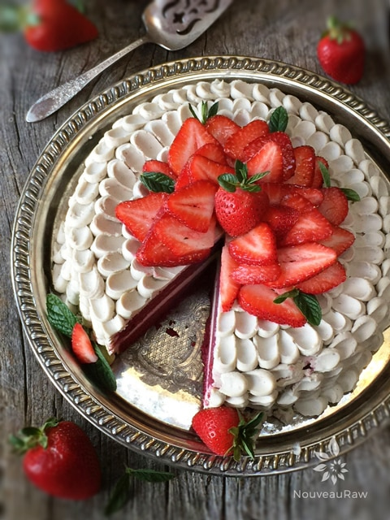
Petal technique:
- The Petal Technique uses a round tip in your piping bag and a small spatula or small spoon to create the effect. It’s a simple process, just time-consuming. It took me 30 minutes to make this cake.
- I used the #12 circular piping tip.
- Pipe a vertical line of icing dots.
- Place the offset spatula or a small spoon tip in the middle of the dot, press down, and drag.
- I am a lefty, so I naturally drag the spoon to the left… if it is more natural for you to go to the right, then do so.
- Continue around the cake, one vertical row at a time. This will take a little time, but it is well worth it!
- If the frosting starts to get to warm in the piping bag (due to room temp or the warmth of your hand) return it to the fridge to set up a bit. I didn’t have to do this, but I can see where it might be needed if the climate or room temp is warmer than 70 degrees (F).
- On the very last row, don’t spread the dot as far as the other rows. Make sure that this last row is on the back of the cake, though it isn’t too noticeable.
Decorate:
- I ran out of frosting as you will see in a photo down below… strawberries to the rescue! That was my ultimate plan from the get-go, so it all worked out perfectly.
- Remove the green stems from the strawberries and cut them into thin slices.
- Create a circle of sliced strawberries, working from the outside in. Slightly overlapping till you reach the center.
- Poke mint leaves within the strawberries and smile at your creation.
- Serve the cake when it is thawed to get the most of the texture and flavor.
Tips:
- Feel free to just swirl in the frosting on if you don’t want to do the petal technique… but I encourage you to try it, you will amaze and impress yourself, (not to mention everyone else!).
- Take pictures!
- When done taking pictures, CAREFULLY carry them to the table. As I was doing this, I sneezed… my head went one direction to miss the cake, and the cake went the opposite direction to miss the sneeze… my cake slid off the holder and plopped onto the bench of our kitchen table with a loud thud. This step is optional, don’t recommend it, but hey… if you are looking for something to test your character, go for it. Lol *slaps forehead*… OY-VEY! I looked at my smashed cake, threw my hands in the air, and looked to the sky… “NOOOOOOO!” I think every cow within 10 miles around us heard me. Then I just had to laugh. When I first met Bob, I asked him what he did or said whenever he stubbed his big toe (to me, this tells me a lot about a person). Well, this is how I respond when cakes go a-flying! Lol, How would you respond?
Now that you know what it looks like… let me show you how to make it.
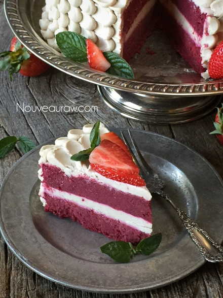
Weighing out the beets….
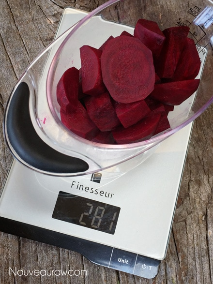
This is the texture of the beets after I processed them.
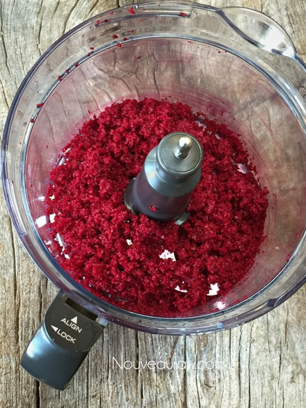
Weighing out the pitted Medjool dates…
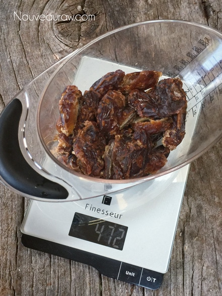
This is the texture after blending everything but the pulp it in.
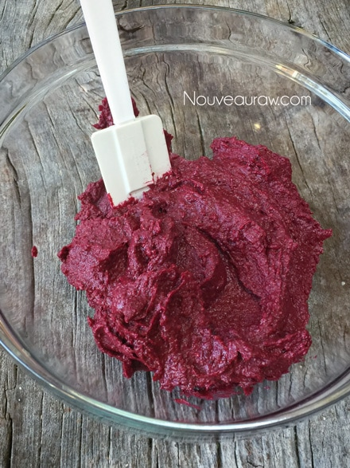
Divide the batter and press one section in the base of the pan.
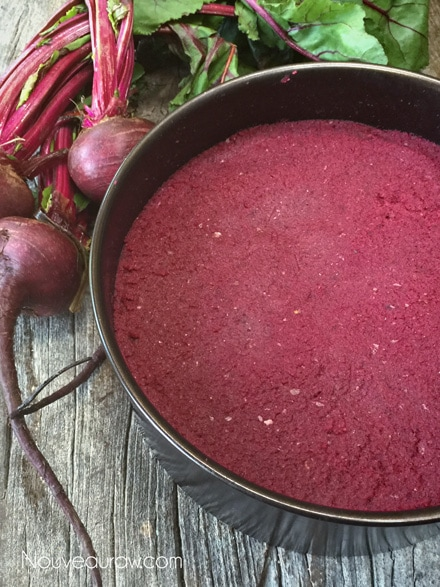
Pour 2 cups of liquid frosting on top and chill for a few hours.
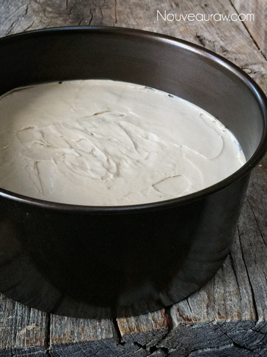
After the surface hardens, add the remaining cake batter on top.
I used a measuring cup to smooth the surface.
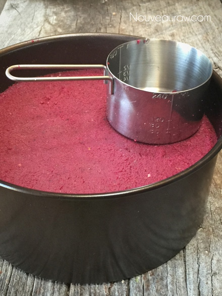
Place in the freezer to harden the cake so you can frost it.
Either frost as you would a typical cake or do a thin “crumb
coat” layer before doing the petal technique.
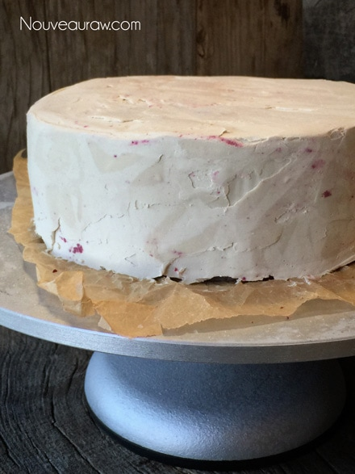
Load the piping bag.
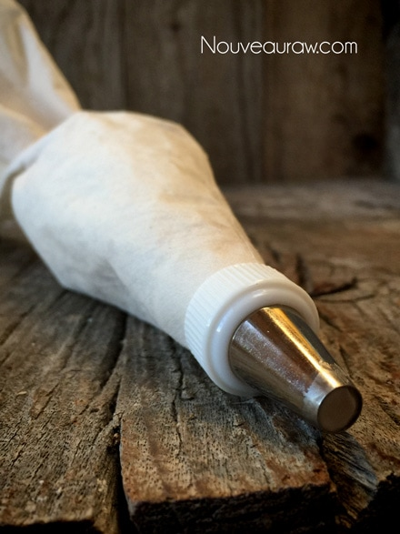
Create a row of frosting dots, starting from the top to the bottom.
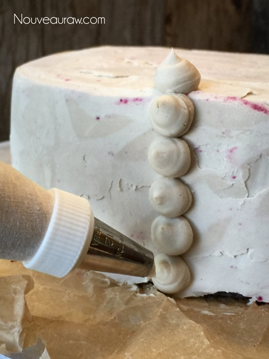
Use the tip of a very small spoon to drag the frosting out.
Practice this on a cutting board before doing it on the cake.
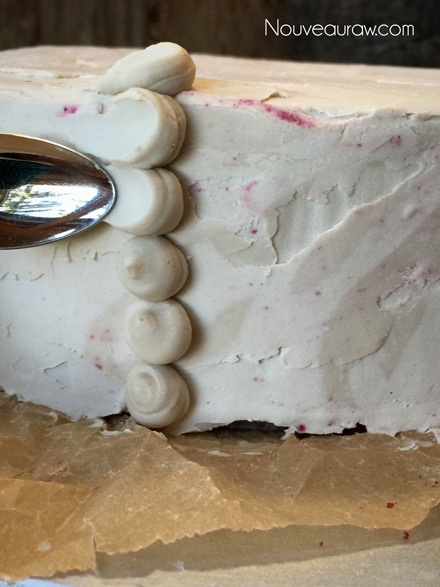
After you complete each row, make another row of dots, repeat…
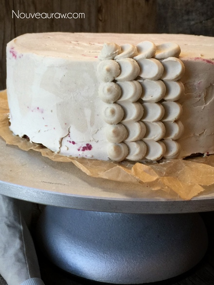
I started to create petals of the top the cake…
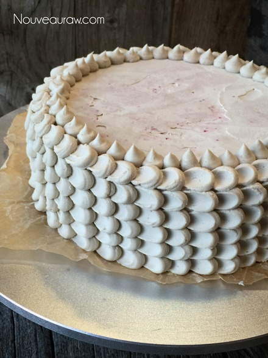
But ran out of frosting! hehe As you can see.
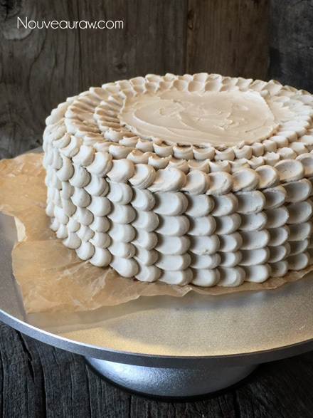
Strawberries to the rescue!
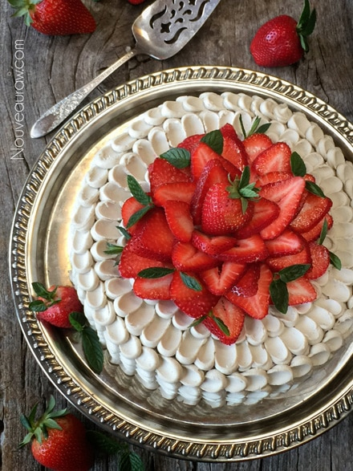
For me the scariest part… cutting the cake. :) Please read the link
above on how to cut a cake, making clean lines.
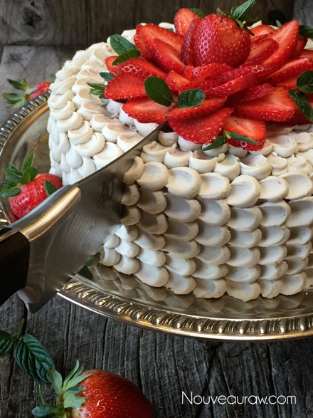
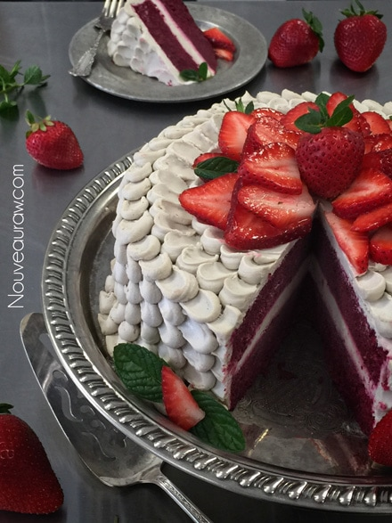
© AmieSue.com